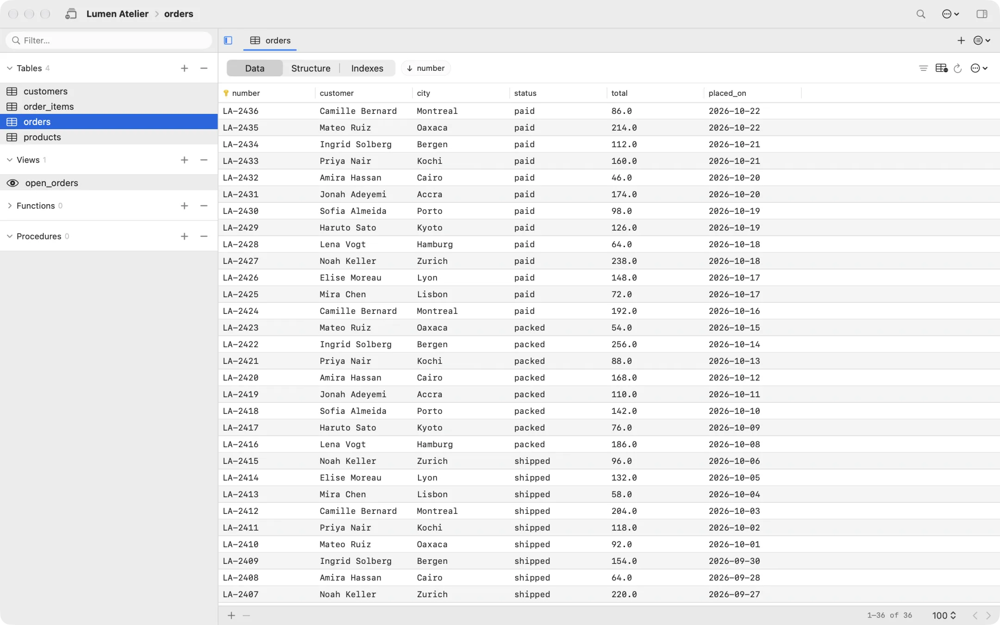
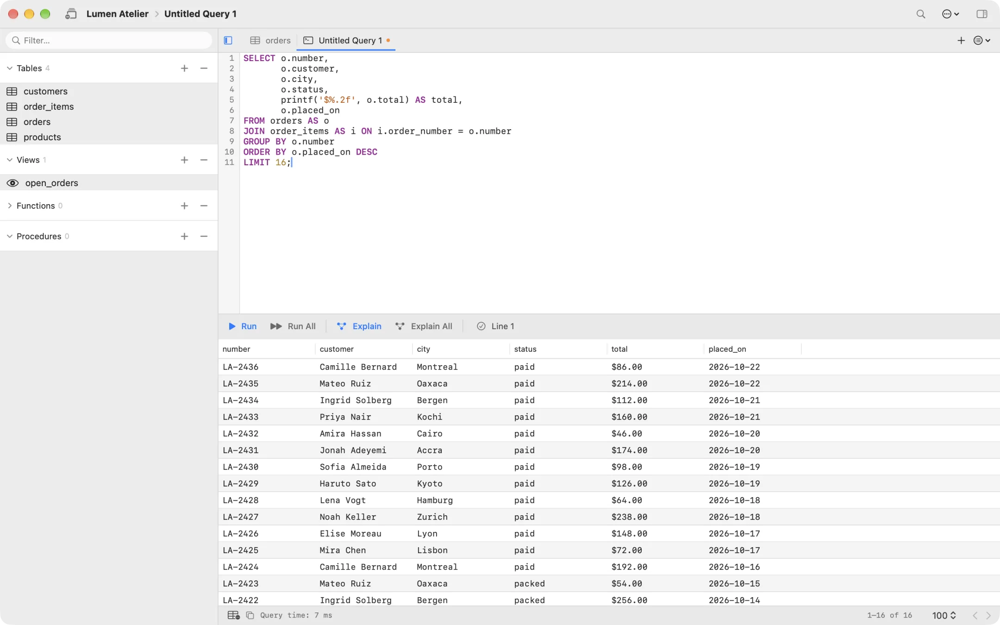
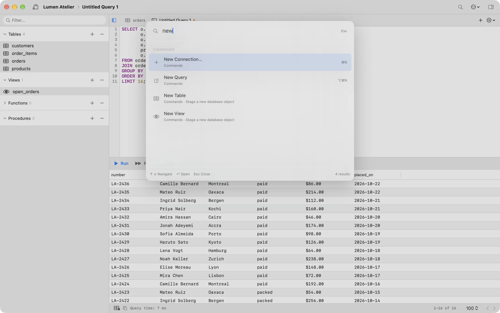

A native Mac workspace for your databases.
Open a connection, browse tables, and run SQL. Redis, MongoDB, Firebase, and R2 use the same app.
Download How to install and update
- SQLite
- PostgreSQL
- MySQL
- MariaDB
- Redis
- MongoDB
- Cloud Firestore
- Realtime Database
- Cloudflare R2



What you can do
- Each connection opens in a native macOS window tab.
- Browse tables, edit structure, and run SQL in document tabs.
- ⌘K searches commands, connections, and database objects.
- Import and export CSV, JSON, and SQL, and take snapshots.
- Compare schemas, then sync or clone one database into another.
- Passwords stay in Keychain. The app has no analytics or telemetry.